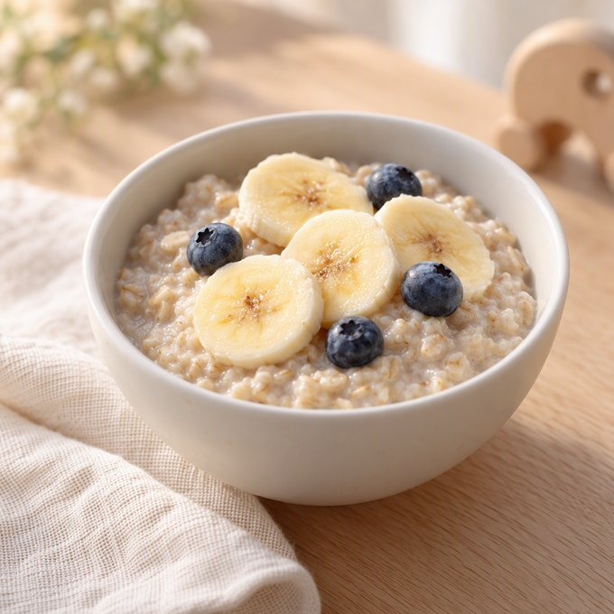
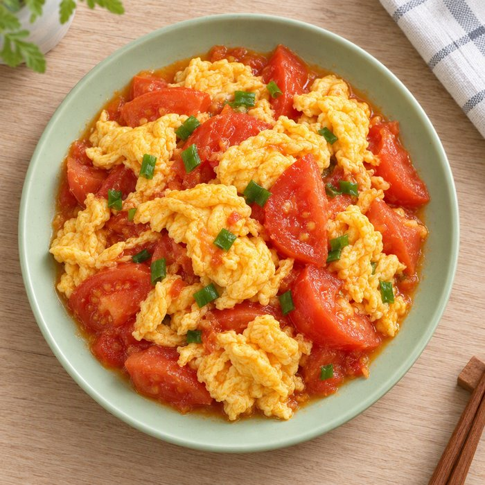
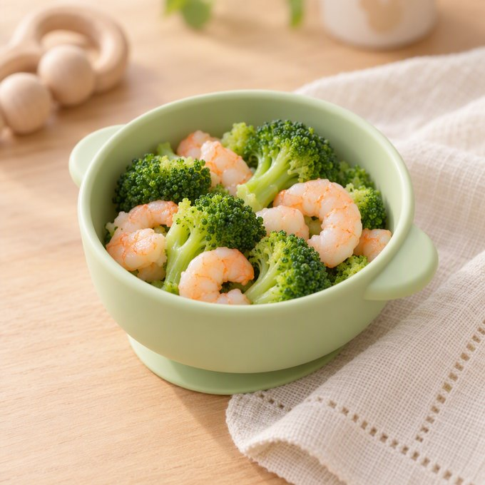
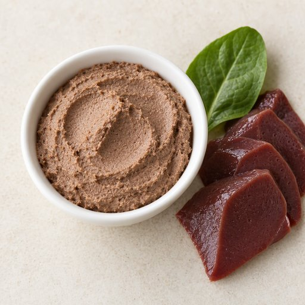
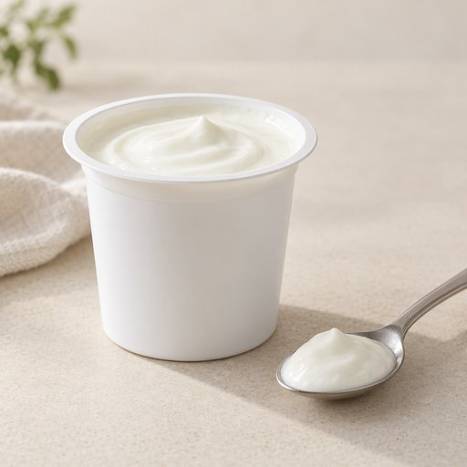

💗 今日营养评价
宝宝今天
吃的很好！
吃的很好！
营养均衡，继续保持~
🌿
营养达标75%
比昨天 ↑12%
🥚
蛋白质
82%
已达标
🥬
蔬菜
68%
接近达标
🌾
碳水化合物
78%
已达标
🍅
富铁食物
54%
需补充
今日三餐
查看全部🌅 早餐 07:45

燕麦粥 + 香蕉
✅ 营养均衡
🌞 午餐 12:30

番茄炒蛋
✅ 营养均衡
🌙 晚餐 18:15

西兰花虾仁
⚠️ 需补充富铁食物
🎤
语音助手
说一句话 · 自动记录
📄
营养报告
日报 / 周报 / 月报
👥
家庭成员
3 人 · 信息同步
👨🍳
备餐建议 AI
下一餐吃什么？让 AI 为宝宝定制营养方案
去看看 ›
今天 · 9月27日
共 3 餐早餐 · 鸡蛋米粉
午餐 · 番茄炒蛋

晚餐 · 猪肝泥
昨天 · 9月26日
共 3 餐
加餐 · 原味酸奶
午餐 · 番茄炒蛋
早餐 · 蒸蛋羹
本周整体达标 ⓘ
78%
营养摄入均衡，继续保持哦~
🥩
富铁食物
5/7天
🥬
蔬菜种类
9种
🧂
钠控制
4/7天
三餐营养概览 ⓘ
🌅早餐
68%
达标率
营养均衡
🌞午餐
82%
达标率
表现优秀
🌙晚餐
71%
达标率
继续加油
营养摄入趋势 ⓘ
蛋白质
蔬菜
碳水化合物
富铁食物
这个月宝宝吃得最多 ⓘ
🥚
鸡蛋
12次
本月出现最多
👑 Top 4 食材
🥚
鸡蛋
12次
🥩
牛肉
8次
🍅
番茄
7次
🎃
南瓜
6次
食物多样性 ⓘ
32种食材
本月累计尝试
🍃
本月餐食记录 ⓘ
🍽️记录 86 餐
🌅早餐28
🌞午餐29
🌙晚餐29
每日记录情况
9/219/229/239/249/259/269/27
月度营养变化 ⓘ
🥩 富铁食物达标天数
+3 天 ↑
🥬 蔬菜种类
+5 种 ↑
🧂 钠偏高天数
−2 天 ↓
统计依据已记录的餐食与食材，仅作饮食参考，不构成医学或营养诊断。
小
小美
我妈妈 · 管理员
爸
阿伟
爸爸 · 可查看与记录
奶
奶奶
祖辈 · 可查看
宝宝档案
🍼
11 月龄
用于营养建议的适龄匹配
⚠️
过敏与饮食限制
已登记 1 项（虾）
家庭动态
全部小
小美 记录了午餐
番茄炒蛋 · 2 小时前
奶
奶奶 查看了营养报告
本周达标 78% · 昨天
爸
阿伟 加入了家庭
可查看与记录 · 3 天前
小美
小美
📷
扫描配料表
拍一拍识别添加剂与过敏原
🎙️
AI 语音助手
说一句，帮你分析饮食与健康
🥣
备餐建议
下一餐该补什么
🔔
锁屏推送预览
看看记录提醒长什么样
⚙️
提醒与通知
🔒
隐私与数据
演示界面 · 页面插画由 AI 生成（非实拍），餐食与营养数据为示例数据，不构成医学或营养诊断。